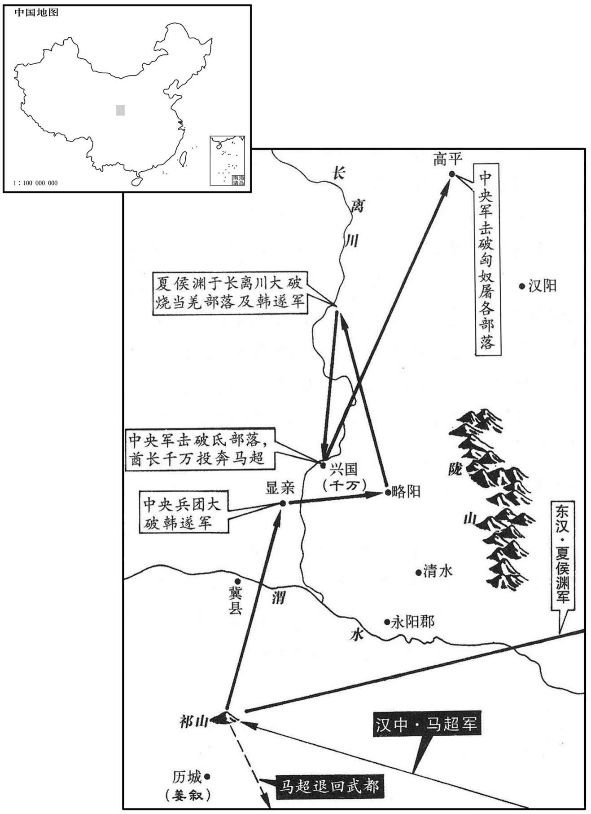

公元214年资治通鉴：本年记事、原文与白话对照
按原书编年位置阅读；追叙和史论不等于本年发生的事件。白话采用所据译本，缺译不以生成译文补齐。
卷67 · 本年记事
公元214年 · 汉孝献皇帝建安十九年
建安十九年〔（甲午、二一四）〕
上传原文的注释括号有异常，字符原样保留；无法可靠划分的段落默认全文显示。
本年事件索引（现代整理）
- 夏侯渊击退马超，平定兴国氐与高平屠各
- 夏侯渊击破韩遂、长离羌，收降兴国氐
- 曹操受命位列诸侯王之上
- 旱灾后转为大雨
- 孙权攻克皖城，俘获朱光及数万军民
- 张飞擒获严颜，敬其不屈而释放
- 庞统中箭身亡，刘备攻下雒城并围成都
- 马超脱离张鲁，暗中投降刘备
- 刘璋开城投降，刘备迁其至公安
- 刘备入成都，任用刘璋旧臣与随军将领
- 刘备破格重用刘巴、黄权等旧臣及降臣
- 刘巴献策铸直百钱，迅速充实府库
- 赵云劝刘备归还益州百姓田宅，刘备采纳
- 霍峻坚守葭萌城近一年，击退刘璋援军
- 诸葛亮为法正辩护，容其报复私怨
- 诸葛亮说明治蜀严法的用意，回应法正劝谏
- 刘备因蒋琬政务不治欲罚，诸葛亮劝止
- 曹丕任植的家丞邢颙以礼约束曹植
- 荀攸去世，曹操赞其进贤去恶
- 夏侯渊攻克枹罕，斩杀宋建并平定陇右
- 献帝向曹操求情不成，曹操自此不再朝见
- 曹操逼死伏皇后及其二子，伏氏宗族百余人被杀
- 曹操抵达孟津
- 高柔劝曹操勿株连逃兵家属，曹操采纳

本年形势与背景参考图
春，马超从张鲁求兵，北取凉州，鲁遣超还围祁山。姜叙〔【章：甲十一行本「叙」下有「等」字；乙十一行本同；孔本同。】〕告急于夏侯渊，诸将议欲须魏公操节度。渊曰：「公在邺，反复四千里，比报，叙等必败，非救急也。」〔比，必寐翻。〕遂行，使张合督步骑五千为前军。〔合，古合翻，又曷合翻。〕超败走。
春季，马超请求张鲁分派给他一支军队，向北攻取凉州，张鲁派遣马超回军围攻祁山，祁山守将姜叙向夏侯渊告急。夏侯渊部下将领议论，认为必须上报魏公曹操，由他发令调度。夏侯渊说：“魏公远在邺城，向他报告，往返行程四千里，等他的命令传到这里，姜叙等人必定早已被打败，这不能解救危机。”于是命令部队行动，由张率步、骑兵五千人为先头部队。马超败退而走。
韩遂在显亲，〔显亲县属汉阳郡，班志无之，盖光武所置，以封窦友。贤曰：显亲故城，在今秦州成纪县东。〕渊欲袭取之，遂走。渊追至略阳城，去遂三十余里，诸将欲攻之，或言当攻兴国氐。〔魏略曰：建安中，兴国氐王阿贵，百顷氐壬千万，各有部落万余，从马超为乱。超破之后，阿贵为夏侯渊所攻灭，千万南入蜀。〕渊以为：「遂兵精，兴国城固，攻不可卒拔，不如击长离诸羌。〔水经注：瓦亭水，南径陇西成纪县，东历长离川，谓之长离水；烧当等羌居之。卒，读曰猝。〕长离诸羌多在遂军，必归救其家。若舍羌独栽则孤，〔谓遂若舍羌而不救，独拥兵自守，则其势孤。〕救长离则官兵得与野战，必可虏也。」渊乃留督将守辎重，〔堑，七艳翻。〕渊曰：「我转鬬千里，今复作营堑，则士众罢敝，不可复用。〔复，扶又翻。罢，读曰疲。〕贼虽众，易与耳。」〔易，以豉翻。〕乃鼓之，大破遂军，进围兴国。氐王千万奔马超，余众悉降。转击高平、屠各，皆破之。〔屠，直如翻。〕
两版字句有差异，建议核对原文。
韩遂驻军显亲。夏侯渊欲图袭击韩遂，夺取显亲，韩遂退走。夏侯渊追到略阳城，距离韩遂驻地三十余里。将领们准备向韩遂发动攻击，有人建议应当进攻兴国的氐人。夏侯渊认为：“韩遂的军队精锐，兴国有坚固的城防，进攻很难迅速取胜，不如攻打长离的羌人部落。很多长离的羌人都在韩遂军中，他们必然会回去援救自己的家乡。韩遂若舍弃长离羌人拥兵自守，便会失去羌人的支持而势孤力单；如果援救长离，我们就可以与他的部队进行野战，一定能够生擒韩遂。”于是，夏侯渊留下督将守卫辎重，亲自率军轻装至长离，攻打烧羌部落，韩遂果然来救长离。夏侯渊的部下将领见韩遂兵多，要扎下营盘、挖好堑壕再作战。夏侯渊说：“我军千里转战，如果再扎营盘，掘堑壕，士兵便会疲惫不堪，无法再用他们去作战了。韩遂兵虽多，却容易对付。”夏侯渊下令击鼓进攻，一举击溃了韩遂的军队，并乘胜包围了兴国。氐王千万逃到马那里，其余的官兵都投降了夏侯渊。夏侯渊又转而进攻高平、屠各两个部落，也都把他们击溃。
三月，诏魏公操位在诸侯王上，改授金玺、赤绂、远游冠。〔汉制：诸侯王金印、赤绂、远游冠。董巴曰：远游冠，制如通天，高九寸，正竖、顶少邪，乃直下为铁卷梁，有展筩横之于前，无山述。〕
三月，献帝颁发诏书，确认魏公曹操地位在诸侯王之上，改授金制印玺、帝王和诸侯专用的红色绶带，以及诸侯王专用的远游冠。
夏，四月，旱。五月，雨水。
入夏，四月，干旱。五月，雨多。
初，魏公操遣庐江太守朱光屯皖，〔皖，户板翻。〕大开稻田。吕蒙言于孙权曰：「皖田肥美，若一收孰，彼众必增；〔收孰，谓稻成熟而收之也。有粮则可以增众。孰，古熟字通。〕宜早除之。」闰月，权亲攻皖城。诸将欲作土山，添攻具，吕蒙曰：「治攻具及土山，必历日乃成；〔治，直之翻。〕城备既修，外救必至，不可图也。且吾乘雨水以入，若留经日，水必向尽，还道艰难，蒙窃危之。今观此城，不能甚固，以三军锐气，四面并攻，不移时可拔；及水以归，全胜之道也。」权从之。蒙荐甘宁为升城督，宁手持练，身绿城，为士卒先；蒙以精锐继之，手执枹鼓，〔枹，音肤。〕士卒皆腾踊。侵晨进攻，食时破之，获朱光及男女数万口。既而张辽至夹石，〔夹石在今安庆府桐城县北四十七里，今名西峡山。〕闻城已拔，乃退。权拜吕蒙为庐江太守，〔守，式又翻。〕还屯寻阳。
当初，魏公曹操派庐江太守朱光在皖屯兵，大量开垦土地，种植稻谷。吕蒙向孙权建议：”皖地田土肥沃，如果一旦稻熟收获，曹军必然扩充，应当早日除去朱光。”闰五月，孙权亲自率军攻打皖城。将领们计划堆土山和增加攻城的设备，吕蒙说：“制造攻城设备和堆土成山，须多日才能完工。到那时，敌人城防已经巩固，援兵必定到来，我们将不能夺得皖城。况且我军乘雨多水大而来，如果旷日久留，大水必定渐渐退走，我们回兵的道路会遇到困难，我以为那是很危险的。现在看来，此城不会十分坚固，我三军士气高昂，四面齐攻，很快就可攻克，然后趁大水未退而回军，这才是大获全胜的策略。孙权采纳了这一建议。吕蒙推荐甘宁为升城督，甘宁手持白色熟绢，身先士卒攀上城墙；吕蒙命令精锐战士紧随其后，他亲自擂鼓指挥，战士们踊跃登城。拂晓发起攻击，早上辰时已经攻克皖城，俘获朱光以及城中男女数万人。不久，张辽率兵赶到夹石，听说皖城失守，便领兵撤退了。孙权任命吕蒙为庐江太守。回兵驻守寻阳。
诸葛亮留关羽守荆州，与张飞、赵云将兵泝流克巴东。〔谯周巴记曰：初平六年，赵韪分巴郡安汉以下为永宁郡。建安六年，刘璋以永宁为巴东郡唐夔州、开州之地也。〕至江州，破巴郡太守严颜，生获之。飞呵颜曰：〔呵，虎何翻。〕「大军既至，何以不降，而敢拒战！颜曰：「卿等无状，侵夺我州。我州但有断头将军，无降将军也！」〔降，户江翻；下同。我州，谓益州也。〕飞怒，令左右牵去斫头。颜容止不变，曰：「斫头便斫头，何为怒邪！」飞壮而释之，引为宾客。分遣赵云从外水定江阳、犍为，〔江阳县，本属犍为郡，刘璋分立江阳郡；唐为泸州。犍为郡，唐为资、简、嘉、眉之地。今渝州亦汉巴郡地也，对二水口，右则涪内水，左则蜀外水。自渝上合州至绵州者，谓之内水；自渝上戎、泸至蜀者，谓之外水。犍，居言翻。〕飞定巴西、德阳。〔谯周巴记：建安六年，刘璋分巴郡垫江以上为巴西。德阳县属广汉郡，唐遂州地。
两版字句有差异，建议核对原文。
诸葛亮留关羽留守荆州，与张飞、越云率兵溯长江而上，攻克巴东。至江州，打败并生擒了巴郡太守严颜。张飞呵斥严颜：“我大军已到，你为什么不投降，而敢率军顽抗！”严颜说：“你们无理夺取我江州，江州只有断头将军，没有投降将军！”张飞大怒，命令左右部属把严颜拉出去斩首。严颜形容举止不变，说：“砍头便砍头，发什么火！”张飞佩服严颜的胆魄，将他释放，并让他做自己的宾客。诸葛亮派遣赵云经外水出兵平定江阳、犍为，派张飞平定巴西、德阳。
刘备围雒城且一年，庞统为流矢所中，卒。法正笺与刘璋，为陈形势强弱，〔中，竹仲翻。卒，子恤翻。为，于伪翻。〕且曰：「左将军从举兵以来，旧心依依，实无薄意。〔盖时人以璋倚备为用，备反袭璋，议备之薄也。〕愚以为可图变化，以保尊门。」〔尊门，谓璋家门。〕璋不答。雒城溃，备进围成都。诸葛亮、张飞、赵云引兵来会。
刘备围攻雒城近一年，庞统被流矢射中而死。法正写信给刘璋，分析了形势强弱，并说：“左将军刘备起兵后，对您仍有旧情，实际上没有恶意。我认为您应改变态度，以保住家门的尊贵。”刘璋未予答复。刘备攻破雒城，进而包围了成都。诸葛亮、张飞、赵去也率兵前来会合。
马超知张不足与计事，又鲁将杨昂等数害其能，超内怀于邑。〔数，所角翻。师古曰：于邑，短气貌，读并如字。又，于，音乌，邑，音乌合翻。〕备使建宁督邮李恢往说之，〔蜀志：后主建兴三年，改益州郡为建宁郡。恢此时盖为益州郡督邮，史因后改郡名而书之耳。说，输芮翻；下同。〕超遂从武都逃入氐中，密书请降于备。备使人止超，而潜以兵资之。超到，令引军屯城北，城中震怖。〔怖，普布翻。〕
马超知道张鲁是个不值得与其计议大事的人，张鲁的部将杨昂等人又多次诋毁他的才能，因此心中忧郁。刘备派建宁督邮李恢前去游说马超，马超便从武都逃到氐人部落，秘密写信给刘备请求归降。刘备派人制止了马超，但暗中派兵给以帮助。马超来到成都，刘备命他率军驻扎城北，成都城内的人非常震惊，心中恐惧。
备围城数十日，使从事中郎涿郡简雍入说刘璋。〔简，姓也。鲁有大夫简叔。蜀志曰：简雍姓耿，后音讹为简。〕时城中尚有精兵三万人，谷帛支一年，吏民咸欲死战。璋言：「父子在州二十余年，〔灵帝中平五年，刘焉牧益州，至是二十七年。〕无恩德以加百姓。百姓攻战三年，肌膏草野者，以璋故也，〔膏，古报翻。〕何心能安！」遂开城，与简雍同与出降，〔降，户江翻。〕群下莫不流涕。备迁璋于公安，尽归其财物，佩振威将军印绶。〔曹公先加璋振威将军，故仍佩其印绶。〕
刘备包围成都数十天，派从事中郎涿郡人简雍进城劝降刘璋。此时城中还有精兵三万人，粮食和丝帛可以支持一年，官吏和百姓都愿死战到底。刘璋说：“我们父子统领益州二十余年，对百姓没有什么恩德。百姓苦战三年，暴尸荒野，实在是因为我刘璋的缘故，我怎能安心！”因此命令打开城门，和简雍同乘一辆车出来投降，部属无不伤心落泪。刘备把刘璋安置在公安这个地方，归还他的全部财物，让他佩带振威将军印绶。
备入成都，置酒，大飨士卒。取蜀城中金银，分赐将士，还其谷帛。〔凡城中公私所有金银，悉取以分赐将士，至于谷帛，则各还所主也。〕备领益州牧，以军师中郎将诸葛亮为军师将军，益州太守〔此益州太守非汉武帝所开置之益州郡也。武帝所置之益州郡，刘蜀为南中地宅。盖刘璋置益州太守与蜀郡太守并治成都郭下。〕南郡董和为掌军中郎将，并署左将军府事，〔署府事者，总录军府事也。〕作将军马超为平西将军，〔晋百官志：四平，立于丧乱。谓平东、平西、平南、平北四将军也。〕军议校尉法正为蜀郡太守、扬武将军，裨将军南阳黄忠为讨虏将军，从事中郎麋竺为安汉将军，〔汉大将军府有从事中郎，职参谋议。〕简雍为昭德将军，北海孙干为秉忠将军，〔安汉、昭德、秉忠，皆备所置将军号也。〕广汉长黄权为作将军，〔长，知两翻。〕汝南许靖为左将军长史，庞羲为司马，〔庞，皮江翻。〕李严为犍为太守，〔犍，居言翻。〕费观为巴郡太守〔费，父沸翻。〕山阳伊籍为从事中郎，零陵刘巴为西曹掾，〔掾，俞绢翻。〕广汉彭羕为益州治中从事。〔羕，余亮翻。〕
刘备进入成都，大摆酒宴，犒劳士卒，取出城中存放的金银，分赐给将士，而粮食和丝帛则物归原主。刘备兼任益州牧，任命军师中郎将诸葛亮为军师将军，益州太守、南郡人董和为掌军中郎将，并且代理左将军府事，偏将军马超为平西将军，军议校尉法正为蜀郡太守、扬武将军，裨将军、南阳人黄忠为讨虏将军，从事中郎麋竺为安汉将军，简雍为昭德将军，北海人孙乾为秉忠将军，广汉长黄权为偏将军，汝南人许靖为左将军长史，庞羲为司马，李严为犍为太守，费观为巴郡太守，山阳人伊籍为从事中郎，零陵人刘巴为西曹掾，广汉人彭为益州治中从事。
初，董和在郡清俭公直，为民夷所爱信，蜀中推为循吏，故备举而用之。备之自新野奔江南也，〔事见六十五卷十三年。〕荆楚群士从之如云，而刘巴独北诣魏公操。操辟为掾，遣招纳长沙、零陵、桂阳。会备略有三郡，巴事不成，欲由交州道还京师。时诸葛亮在临蒸，〔沈约曰：吴立衡阳郡，临蒸县属焉。水经注：蒸水出衡阳重安县西邵陵县界耶姜山，东北流过临蒸县北，东注于湘，谓之蒸口。〕以书招之，巴不从，备深以为恨。巴遂自交趾入蜀依刘璋。及璋迎备，巴谏曰：「备，雄人也，入必为害。」既入，巴复谏曰：〔复，扶又翻。〕「若使备讨张鲁，是放虎于山林也。」璋不听，巴闭门称疾。备攻成都，令军中曰：「有害巴者，诛及三族。」及得巴，甚喜。是时益州郡县皆望风景附，独黄权闭城坚守，须璋稽服，乃降。〔稽，音启；言稽颡服从也。降，户江翻；下同。〕于是董和、黄权、李严等，本璋之所授用也；〔璋以和为益州太守，权为府主簿，严为护军。〕吴懿、费观等，璋之婚亲之；〔璋兄瑁娶吴懿妹，璋母费氏。〕彭羕，璋之所摈弃也；〔羕仕益州不过书佐，人毁之于璋，髡钳为徒隶。〕刘巴，宿昔之所忌恨也；备皆处之显任，〔处，昌吕翻。〕尽其器能，有志之士，无不竞劝，益州之民，是以大和。初，刘璋以许靖为蜀郡太守。成都将溃，靖谋踰城降备，备以此薄靖，不用也。法正曰：「天下有获虚誉而无其实者，许靖是也。〔许靖与弟劭并有高名，汝南月旦评，二人者为之也。〕然今主公始创大业，〔主公之称，始于东都。改明公称主公，尊事之为主也。〕天下之人，不可户说，〔不可户户而说之也。说，如字〕宜加敬重，以慰远近之望。」备乃礼而用之。
当初，董和在益州郡的时候，清明，俭朴、公平、正直，受到汉夷百姓的爱戴和信任，大家公认他是循礼守法的官吏，所以得到刘备的提拨和任用。刘备从新野逃到江南，荆州一带的士人投奔他的非常多，唯独刘巴跑到魏公曹操那里。曹操任命刘巴为掾，派遣他去招降和接收长沙、零陵、桂阳三郡。正赶上刘备夺取了三郡，刘巴无法完成任务，准备由交州转道返回京城。这时诸葛亮在临蒸，写信劝他投奔刘备，他不同意，刘备深感是件恨事。刘巴从交趾进入蜀地依附刘璋。当刘璋准备迎接刘备入蜀的时候，刘巴劝谏说：“刘备是一代奸雄，进入蜀地必定害人。”刘备入蜀以后，刘巴再次劝谏说：“要是让刘备去征讨张鲁，如同放虎归山。”刘璋不听，他便闭门称病。刘备围攻成都，向军队下令：“谁若伤害刘巴，诛灭三族。”及至得到刘巴，刘备非常高兴。当时益州各郡县闻风都如影随形般地投靠刘备，只有黄权紧闭城门坚守，等到刘璋跪拜投降，他才归附。这样，本为刘璋所任用的董和、黄权、李严等，刘璋的姻亲吴懿、费观等，刘璋所排斥的彭，刘备往日所忌恨的刘巴，刘备都予以重用，以尽其才能。有志之士，都争相努力尽职，益州百姓，因此非常合睦。以前，刘璋任命许靖为蜀郡太守。成都将被攻破时，许靖曾计划出城投降刘备，刘备因此而看不起许靖，对他不加任用。法正对刘备说：“世上有一种有虚名而其实不副的人，许靖就是这种人。然而主公您现在刚开始创建大业，不能让天下人议论您。对许靖还是敬重为好，以此抚慰远近之人，不使失望。”刘备这才对许靖以礼相待，加以任用。
成都之围也，备与士众约：「若事定，府库百物，孤无预焉。」及拔成都，士众皆舍干戈赴诸藏，〔藏，徂浪翻。〕竞取宝物。军用不足，备甚忧之，刘巴曰：「此易耳。〔易，以豉翻。〕但当铸直百钱，〔直百钱，一钱直百也。杜佑曰：蜀铸直百钱，文曰「直百」。亦有勒为五铢者，大小称两如一焉，并径七分，重四铢。平诸物价，令吏为官市。」备从之。数月之间，府库充实。
两版字句有差异，建议核对原文。
围攻成都时，刘备曾与部下约定：“若攻破成都，官府仓库的一切财物，你们可以任意地拿，我决不干预。”破城之后，士兵们都扔掉兵器，奔向仓库争抢财物，造成军费不足，刘备深感忧虑。刘巴说：“这很容易解决，只要铸造一种值百钱的的钱币，平抑物价，命官吏设立官市。”刘备采纳了这一建议，几个月后，府库的财物就充足了。
时议者欲以成都名田宅分赐诸将。赵云曰：「霍去病以匈奴未灭，无用家为。〔事见十九卷武帝元狩四年。〕今国贼非但匈奴，未可求安也。须天下都定，各反桑梓，〔都定，犹言皆定也。桑梓，谓其故乡祖父之所树者。诗云：维桑与梓，必恭敬止。〕归耕本土，乃其宜耳。益州人民，初罹兵革，田宅皆可归还，令安居复业，然后可役调，〔调，徒吊翻。〕得其欢心；不宜夺之，以私所爱也。」备从之。
当时，有人建议把成都有名的肥田沃土和住宅分给将领们。赵云说：“霍去病曾认为匈奴尚未消灭，不应考虑自己的家业。现在的国贼远非匈奴可比，我们不能贪图安乐。等到天下都安定以后，将士们重归故里，在自己的田地上耕作，才会各得其所。益州的百姓，刚刚遭受兵灾战祸，土地、田宅都应归还原来的主人，使百姓平安定居，恢复生产，然后才可以向他们征发兵役，收取租税，获得他们的好感；不应该夺取他们财物，以私宠自己所爱的将领。”刘备接受了赵云的意见。
备之袭刘璋也，留中郎将南郡霍峻守葭萌城。张鲁遣杨昂诱峻求共守城。峻曰：「小人头可得，城不可得！」昂乃退。后璋将扶禁、向存等帅万余人由阆水上，〔扶，姓；禁，名。帅，读曰率。阆水即西汉水，禹贡所谓「嶓冢导漾，东流为汉」者也。水经注：漾水出陇西氐道县嶓冢山，谓之西汉水；东南至广汉白水县西，又东南至葭萌县，又东南过巴郡阆中县与阆水会。水出阆阳县而东，径其县南，又东注汉水。昔刘璋攻霍峻于葭萌也，自此水上。又东南入汉州江津县东南入于江。余据此水，今谓之嘉陵江。〕攻围峻，且一年。峻城�之L纔数百人，伺其怠隙，选精锐出击，大破之，斩存。〔伺，相吏翻。〕备既定蜀，乃分广汉为梓潼郡，〔唐梓州之地。宋白曰：绵州巴西县，本汉涪县，属广汉郡。华阳国志：汉元初二年，广汉自绳乡移治涪，后治雒；刘备立梓潼郡，以县属焉。隋改为巴西县。唐梓州治郪，天宝方改为梓潼郡。〕以峻为梓潼太守。
刘备袭击刘璋时，留中郎将南郡人霍峻守卫葭萌城。张鲁派杨昂引诱霍峻，要求共同守城。霍峻说：“我的头可得，而城不可得！”杨昂只好作罢。后来刘璋的部将扶禁、向存等人，率领一万余人溯阆水向上游进发，围攻霍峻近一年。霍峻在城中只有数百名战士，窥伺敌人疲惫的机会，挑选精锐出击，大破敌军，斩杀了向存。刘备占据蜀地后，从广汉郡分出梓潼郡，任命霍峻为梓潼太守。
法正外统都畿，〔备都成都，以蜀郡为都畿。〕内为谋主，一餐之德、睚鈪之怨，无不报复，〔餐，千安翻。睚，五懈翻。鈪，士懈翻。〕擅杀毁伤己者数人。或谓诸葛亮曰：「法正太纵横，〔横，户孟翻。〕将军宜启主公，抑其威福。」亮曰：「主公之在公安也，北畏曹操之强，东惮孙权之逼，近则惧孙夫人生变于肘腋。〔事见上卷十四年。〕法孝直为之辅翼，令翻然翱翔，不可复制。〔谓迎备入益州也。复，扶又翻。〕如何禁止孝道，使不得少行其意邪！」〔法正，字孝直。少，诗沼翻。〕
法正在外统辖蜀郡，在内是为刘备出谋划策的主要人物。他恩怨分明，对他有过一餐饭的恩惠，他都予以报答；对他有一瞪眼的怨恨，他也无不报复，擅自杀害了一些伤害过自己的人，有人对诸葛亮说：“法正肆意横行，将军您应该禀报主公，限制他作威作福。”诸葛亮说：“主公在公安的时候，北边畏惧曹操的强大，东边害怕孙权的威胁，近处则担心孙夫人在家中搞出内乱，法正象羽翼一样辅佐主公，使主公能够自由翱翔，不再受制于他人。怎么能禁止法正，而不许他稍稍随心所欲呢！”
诸葛亮佐备治蜀，颇尚严峻，人多怨叹者。〔治，直之翻。〕法正谓亮曰：「昔高祖入关，约法三章，秦民知德。〔事见九卷高帝元年。〕今君假借威力，跨据一州，初有其国，未垂惠抚；且客主之义，宜相降下，〔下，遐稼翻。〕愿缓刑弛禁以慰其望。」〔以亮等初至为客，益州人士则主也。〕亮曰：「君知其一，未知其二。秦以无道，政苛民怨，匹夫大呼，〔呼，火故翻。〕天下土崩；高祖因之，可以弘济。〔弘，大也。〕刘璋暗弱，自焉以来，〔焉，璋父也。〕有累世之恩，文法羁縻，互相承奉，德政不举，威刑不肃。蜀土人士，专权自恣，君臣之道，渐以陵替。宠之以位，位极则贱；顺之以恩，恩竭则慢。所以致敝，实由于此。吾今威之以法，法行则知恩；限之以爵，爵加则知荣。荣恩并济，上下有节。为治之要，于斯而着矣。」〔孔子曰：政宽则济之以猛，孔明其知之。治，直吏翻。〕
诸葛亮辅佐刘备治理蜀地，很强调严刑峻法，很多人怨恨叹息。法正对诸葛亮说：“以前汉高祖入函谷关，约法三章，秦地的百姓感恩戴德。如今，您借助权势的力量，占据一州的地方，刚刚建立国家，还没有施加恩惠，进行安抚，况且从外来的客与本地的主这间的关系讲，客人的姿态应当降低，希望您能放宽刑律和禁令，以适应当地人的意愿。”诸葛亮回答说：“您只知其一，不知其二。秦因为暴虐无道，政令苛刻，造成人民对它的怨恨，所以一介草民大呼一声，天下就土崩瓦解。汉高祖在这种情况下，可以采用宽大的政策而获得很大成功。刘璋糊涂软弱，从其父刘焉那时起，刘家对蜀地的人两世的恩惠，全靠典章和礼仪维系上下的关系，互相奉承，德政不能施行，刑罚失掉威业。蜀地的人专权而为所欲为，君臣之道，渐渐破坏。给予高官表示宠爱，官位无法再高时，反而被臣下轻视；顺从臣下的要求，施加恩惠，不能的时候，臣下便会轻狂怠慢。蜀地所以到了破败的地步，实在是由于这样的原因引起的。我现在要树立法令的威严，法令被执行，人们便会知道我们的恩德；以爵位限定官员的地位，加爵的人便会觉得很荣耀。荣耀和恩德相辅相成，上下之间有一定的规矩，治国的主要原则，由此清楚地显示出来了。”
刘备以零陵蒋琬为广都长。〔长，知两翻。〕备尝因游观，奄至广都，见琬众事不治，时又沈醉。〔沈，持林翻。沈醉，言为酒所沈滞也。〕备大怒，将加罪戮。诸葛亮请曰：「蒋琬社稷之器，非百里之才也。其为政以安民为本，不以修饰为先，愿主公重加察之。」〔重，直用翻，言再三加察也。〕备雅敬亮，乃不加罪，仓卒但免官而已。
刘备任命零陵人蒋琬为广都长。刘备外也游览，突然到达广都，见蒋琬不处理各项政务，当时又喝得烂醉。刘备大怒，要将蒋琬治以死罪。诸葛亮为蒋琬求情说：“蒋琬是治国的栋梁之材，不是治理百里小县的官史。他施政以安定百姓为本，不以做表面文章为先，希望主公重新考察。”刘备一向尊重诸葛亮，才没有给蒋琬定罪，只是在仓促中免去了他的官职。
秋，七月，魏公操击孙权，留少子临菑侯植守邺。〔少，诗照翻。考异曰：植传云：「太祖戒之曰：『吾昔为顿丘令，年二十三，思此时所行，无悔于今。今汝年亦二十三矣。』」又云：「植，太和六年薨，年三十一。」按植今年年二十三，则死时当年四十一矣。本传误也。〕操为诸子高选官属，〔为，于伪翻。〕以邢颙为植家丞；颙防闲以礼，无所屈桡，〔颙，鱼容翻。防，堤也。闲，阑也。防以制水，闲以制兽，皆禁止之义也。桡，奴教翻。〕由是不合。庶子刘桢美文辞，植亲爱之。〔汉制：列侯置家丞、庶子各一人，主侍侯，使理家事。桢，音贞。〕桢以书谏植曰：「君侯采庶子之春华，忘家丞之秋实，为上招谤，其罪不小，愚实惧焉。」
秋季，七月，魏公曹操进攻孙权，留下小儿子临侯曹植守卫邺城。曹操为自己的几个儿子选任官属的标准很高，任命邢为曹植的家丞。邢对曹植按礼仪严格约束，从不退让，因此与曹植不合。庶子刘桢擅长写文章，辞藻华丽，曹植对他很亲近、喜爱。刘桢写信劝谏曹植：“君侯您只采撷庶子我华丽的春花，而忽视了家丞的秋实，将为君上招来毁谤，罪过不小，我实在感到恐惧。”
魏尚书令荀攸卒。攸深密有智防，〔智以料事，防以保身。〕自从魏公操攻讨，常谋谟帷幄，时人及子弟莫知其所言。操尝称，「荀文若之进善，不进不休；荀公达之去恶，不去不止。」〔去恶之去，羌吕翻。荀彧，字文若；荀攸，字公达。〕又称：「二荀令之论人，久而益信，吾没世不忘。」〔彧为汉尚书令，攸为魏尚书令。〕
魏尚书令荀攸去世。荀攸深沉明智，善于保护自己。自从跟随魏公曹操四方征战，经常参与机密，献计献策，当时的人和他的子弟，都不知道他曾献过哪些计策。曹操曾称赞说：“荀进献好的建议，不被采纳不罢休；荀攸排除错误的行为，不达到目的不停止。”又说：“荀和荀攸两位尚书令，对人物的评论，时间愈久，愈显示他们的观点中肯，我终身都不会忘却。”
初，枹罕宋建因凉州乱，自号河首平汉王，〔枹罕县，前汉属金城郡，后汉属陇西郡。枹，音肤。赐支河首在金城河关之西，建自以居河上流，故以为号。〕改元，置百官，三十余年。冬，十月，魏公操使夏侯渊自兴国讨建，围枹罕，拔之，斩建。渊别遣张合等渡河，入小湟中，〔湟水源出西海盐池之西北，东至金城允吾县入河。夹湟两岸之地，通谓之湟中。又有湟中城，在西平、张掖之间，小月氏之地也，故谓之小湟中。〕河西诸羌皆降，〔降，户江翻。〕陇右平。
以前，罕人宋建乘凉州动乱，自己号称河首平汉王，更改年号，设置官署，任命各级官吏，长达三十余年。冬季，十月，魏公曹操派夏侯渊从兴国出发征讨宋建，包围并攻克了罕，将宋建斩首。夏侯渊派张等人渡过黄河，进入小湟中，河西羌人各部落全部归降，陇右地区被平定了。
帝自都许以来，守位而已，左右侍卫莫非曹氏之人者。议郎赵彦常为陈言时策，魏公操恶而杀之。〔为，于伪翻。恶，乌路翻。〕操后以事入见殿中，帝不任其惧，〔见，贤遍翻；下同。任，音壬，胜也；不任，犹言不胜也。〕因曰：「君若能相辅，则厚；不尔，幸垂恩相舍。」操失色，俛仰求出。旧仪：三公领兵，朝见，令虎贲执刃挟之。〔以其领兵，惧其为变，故防之也。朝，直遥翻，下同。见，贤遍翻。〕操出，顾左右，汗流浃背；〔浃，即协翻。〕自后不复朝请。〔复，扶又翻。〕
汉献帝自从建都许昌以来，仅仅能够保住自己的皇帝地位而已，左右随从侍卫无一不是曹操的人。议郎赵彦经常为汉献帝分析时势，进献对策，因此遭到魏公曹操的憎恶而被杀害。后来，曹操有事进殿见献帝，汉献帝无法控制恐惧，对曹操说：“您若能辅佐我，就宽厚些；否则，您就开恩把我抛开。”曹操大惊失色，急忙应付着请求告辞。汉朝旧制规定：领兵的三公在朝见皇帝时，都要由虎贲武士持刀挟持。曹操出殿后，回顾左右，汗流浃背，从此不再朝见献帝。
董承女为贵人，操诛承，求贵人杀之。帝以贵人有怼，〔怼，如林翻，孕也。〕累为请，不能得。〔为，于伪翻。〕伏皇后由是怀惧，乃与父完书，言曹操残逼之状，〔贼人者谓之残。逼，言其逼上也。〕令密图之，完不敢发。至是，事乃泄，〔董承诛事见六十三卷五年。〕操大怒，十一月，使御史大夫郗虑持节策收皇后玺绶，〔郗，丑之翻。玺，斯氏翻。绶，音受。〕以尚书令华歆为副，勒兵入宫，收后。后闭户，藏壁中。歆坏户发壁，就牵后出。〔华子鱼有名称于时，与邴原、管宁号三人为一龙，歆为龙头，原为龙腹，宁为龙尾。歆所为乃尔；邴原亦为操爵所縻；高尚其事，独管宁耳。当时头尾之论，盖以名位言也。呜呼！坏，音怪。〕时帝在外殿，引虑于坐，〔坐，徂卧翻。〕后被发、徒跣、行泣，过诀曰：「不能复相活邪﹖」〔被，皮义翻。复，扶又翻。〕帝曰：「我亦不知命在何时！」顾谓虑曰：「郗公，〔汉御史大夫，三公也，故以呼之。〕天下宁有是邪！」遂将后下暴室，以幽死；〔下，遐稼翻。〕所生二皇子，皆酖杀之，兄弟及宗族死者百余人。
垂承的女儿是献帝的贵人，曹操杀掉董承以后，要求把他的女儿董贵人也杀死。汉献帝以贵人有身孕为由，多次向曹操求情，曹操都不同意。伏皇后因此而心怀恐惧，写信给父亲伏完，谈了曹操逼迫皇帝的凶恶行为。到这时，事情泄露出来，曹操知道后非常愤怒。十一月，派御史大夫郗虑带着符节和策书，收缴了皇后的印玺绶带，派尚书令华歆为副，率兵入宫逮捕伏皇后。皇后关上门，藏在夹墙里。华歆砸门破壁，把皇后拖了出来。汉献帝当时在外殿，招呼郗虑坐下，皇后披头散发，光着双脚，边走边哭，经过献帝面前诀别道：“不能再救我一命吗？”献帝说：“我也不知道自己能活到几时！”他看着郗虑说：“郗公，天下难道竟有这样的事吗！”就这样把皇后关在宫中的监狱里，幽禁而死。她生的两个皇子，也被用毒酒杀死了，她的兄弟以及宗族亲属被害者有一百余人。
十二月，魏公操至孟津。
十二月，魏公曹操到达孟津。
操以尚书郎高柔为理曹掾。〔理曹，汉公府无之，盖操所置。掾，俞绢翻。〕旧法：军征士亡，考竟其妻子。〔考核而穷竟之也。〕而亡者犹不息。操欲更重其刑，并及父母、兄弟，柔启曰：「士卒亡军，诚在可疾，〔疾，恶也。书曰：尔毋忿疾于顽。〕然窃闻其中时有悔者。愚谓乃宜贷其妻子，一可使诱其还心。〔诱，音酉。〕正如前科，固已绝其意望；而猥复重之，〔复，扶又翻，下同。〕柔恐自今在军之士，见一人亡逃，诛将及己，亦且相随而走，不可复得杀也。此重刑非所以止亡，乃所以益走耳！」操曰：「善！」即止不杀。
曹操任命尚书郎高柔为理曹掾。旧有的法令规定：军队征来的兵士逃跑了，要追究他们的妻子、儿女。但士兵逃亡仍然不断。曹操要加重对逃兵的刑罚，连带追究他们的父母、兄弟。高柔说：“士兵开小差，确实很可恶，但听说他们之中也常有人后悔。我以为，应当宽恕他们的妻子、儿女，或许可以诱使他们心回意转。只按照以前的法令，本已断绝了他们返回的希望，要是再加重刑罚，我恐怕从今以后，军队中的士兵，见到一人逃跑，害怕自己受牵连而死，也会跟着逃跑，将不再有人可杀了。这样，加重刑罚不但不能制止士兵逃跑，反而会使逃兵更多。”曹操说：“很好！”便停止了处死逃兵的刑罚。